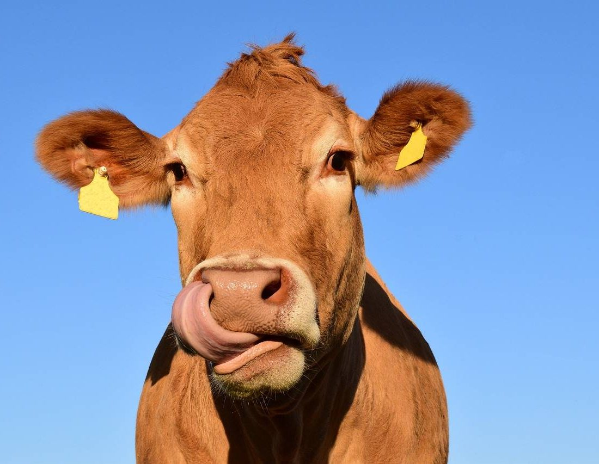

Se esta aqui, imagino que seja porquê voce deseja saber como queijos são feitos. Bom vamos lá.

O queijo é feito a partir da coagulação do leite (de vaca, cabra, ovelha ou búfala). O processo consiste em separar os sólidos do leite (gorduras e proteínas) da parte líquida (soro). Essa massa sólida é então drenada, prensada, salgada e, em muitos casos, maturada para desenvolver sabor e textura.O processo padrão de fabricação industrial ou artesanal segue seis etapas principais:1. Pasteurização: O leite é aquecido para eliminar bactérias nocivas e garantir a segurança do alimento.2. Fermentação (Acidificação): Adicionam-se bactérias "do bem" (fermento lácteo) ao leite, que transformam o açúcar do leite (lactose) em ácido lático, criando o ambiente ideal para o queijo.3. Coagulação: Adiciona-se o coalho (uma enzima) ao leite, o que faz com que ele passe do estado líquido para um estado sólido, formando a "coalhada".4. Corte e Drenagem: A coalhada é cortada em pedaços. Quanto menores os pedaços, mais soro é liberado e mais duro será o queijo. O líquido resultante (soro) é drenado.5. Prensagem e Modelagem: A massa restante é colocada em formas e prensada para retirar o resto do soro e ganhar a forma desejada.6. Salga e Maturação: O sal é adicionado para dar sabor, ajudar na conservação e liberar mais soro. Por fim, o queijo pode ser consumido fresco ou armazenado em locais com temperatura e umidade controladas para maturar, ganhando sabores mais complexos e casca
É isso. Agora se quiser voltar para a página anterior é só clicar aqui